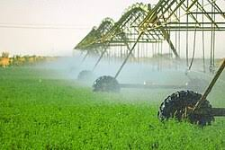
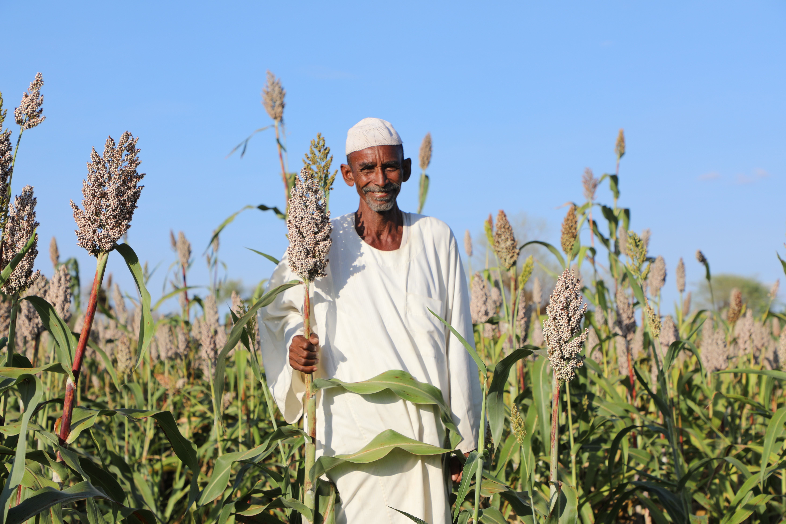
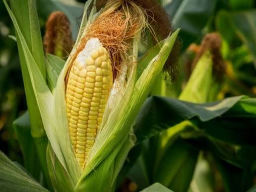
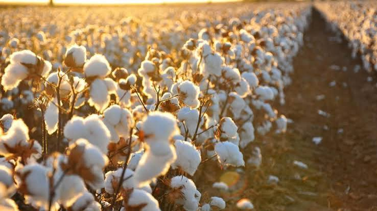
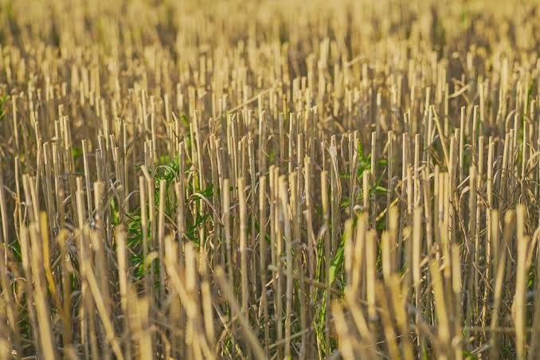
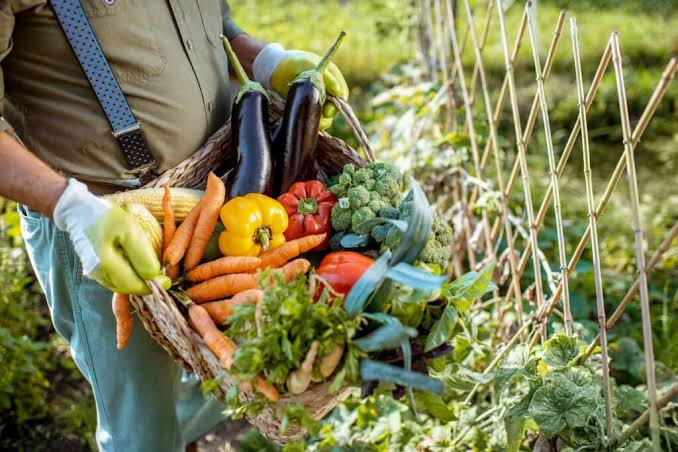

افضل انواع الاستثمار في السودان هو الاستثمار في الزراعة بحيث يتميز السودان بتنوعه المناخي وارضيه الخصبه التي تصلح لزراعة العديد من المحاصيل المطلوبه عالميا توضح الصفحه اهم هذه المحاصيل وافضل اماكن لزراعتها في السودان بحيث تساعد المستثمرين الذين يرغبون في الاستمثار في الزراعة السودانيه في الحصول على افضل الخيارات بالنسبه لهم ولموقعهم في السودان

يمكن القول بأن القمح هو من أهم المحاصيل الزراعيه التي تستهلك بكميات كبيره عالميا فبذلك يعد من افضل انواع الاستمثار بسبب الطلب العالي لديه كما يمكن زراعته بسهوله في السودان حيث تتوفر البيئه اللازمه والاراضي الخصبه لزراعته بالاخص قي ولايات مثل القضارف وولاية النيل الابيض ولايه كسلا

يمكن القول بأن الذره هي ركيزه اساسية في استهلاك الانسان عالميا حيث اصبحت محصولا لايمكن الاستغناء عنه في العديد من الصناعات الغذائيه لذلك يعد من افضل انواع الاستمثار بسبب الطلب العالي لديه كما يمكن زراعته بسهوله في السودان حيث تتوفر البيئه اللازمه والاراضي الخصبه لزراعته بالاخص قي ولايات مثل القضارف وولاية النيل الابيض ولايه كسلا

القطن او كما يسمى عالميا بالذهب الابيض هو من افضل المحاصيل التي يسهل زراعتها في السودان والتي تتميز بطلب عالي داخل السودان او خارجه وذلك يجعله يعد من افضل انواع العمله الصعبه ويمكن زراعه بسهوله في ولايات مثل الجزيره وولايه سنار

يعد من افضل المحاصيل الزيتيه والتي تمميز بجوده مذهلة في السودان مما يسهل بيعه وتصديره للاسواق العالمية يمكنن زراعته في العديد من الولايات ثل القضارف واسنار وولايه النيل الازرق وشمال وجنوب كردفان
"
تعتبر زراعة الخضروات والفواكه من أهم المحاصيل الزراعية في السودان، حيث يتم زراعتها في مناطق مختلفة من البلاد. وتتميز هذه المناطق بتربة خصبة ومناخ مناسب لنمو الخضروات والفواكه. ومن بين أهم المناطق التي يتم فيها زراعة الخضروات والفواكه في السودان هي ولاية الجزيرة وولاية الخرطوم وولاية النيل الأبيض. وتعد هذه المناطق من أفضل الأماكن لزراعة الخضروات والفواكه بسبب توفر المياه والتربة الخصبة والظروف المناخية المناسبة.
